You can share your creations in Gravit Designer by exporting layers, groups, objects, or slices of your design to different file formats and sizes. File formats supported for exporting include SVG (.svg), PDF (.pdf), PNG (.png) and JPEG (.jpeg).
Quick exporting
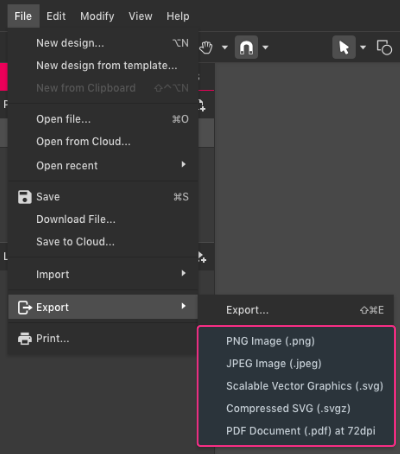
For quick export, go to . This option will export the entire page with Gravit Designer’s default settings:
- PNG – 1x, use page background, Compression: ZIP Deflate/Inflate, 32bit, RGB+alpha, Adaptive, Non-interlaced
- JPEG – 1x, use page background premultiplied on white if transparent, 100% quality, RGB, Not progressive, Sub-sampling: 2×2,1×1,1×1, 24bit, JPEG extension, Baseline DCT, Huffman coding,
- SVG – 1x, use page background, do not use id-s and classes, coordinate precision: 3 decimal places, do not export text as curves, do not preserve editing capabilities
- SVGZ – same settings as SVG, but compressed
- PDF – 1x, 72dpi, and 150dpi, use page background, use effects, do not export text as curves, RGB
These options will use the page size defined at the start of the project for the export size.
If there are multiple pages:
- PDF format will export a multi-page document
- All other formats will export the selected page as a single image.
Advanced exporting
Exporting with more options
To export with more controls and options, go to + + , or click the icon in the toolbar:
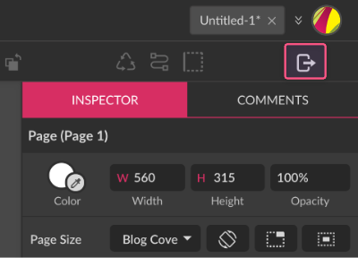
When clicking this option, the Exporting dialog will appear. On this dialog, you can set the options:
1. Export whole canvas, selection or assets
2. Format
3. Size
4. Background color
5. Retina display quality
6. Export all pages at once
7. Pages
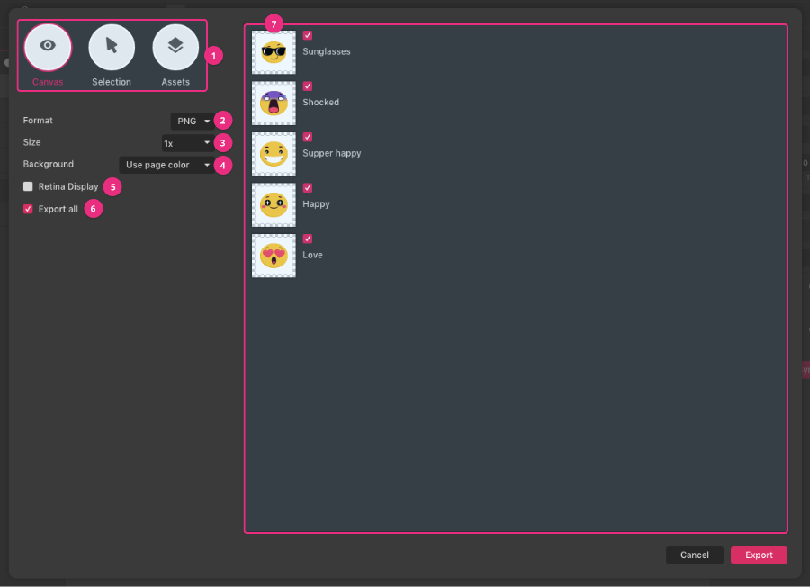
For image formats that only support a single page (JPEG, PNG, SVG), exporting multiple pages will:
– Web app – produce a zip file containing each page as a separate image.
– Desktop app – ask you to select a folder – save each page as a separate image in that folder.
At this point you can deselect any pages you do not wish to export.
Export dialog box options
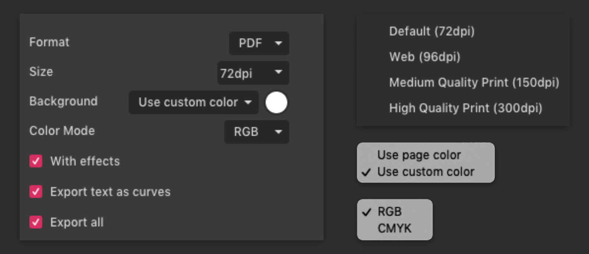
- Size (DPI): The default DPI is 72dpi. use 96 dpi for online (web) images. See the section on professional printing if you are exporting to PDF for printing.
- Background
- Use page color – use the color defined in the design
- Use custom color – set your own color rather than the color defined in the design.
- Transparent – use a transparent background (PDF transparency is not supported by all programs)
- Color mode: Use RGB for online viewing, and CMYK for print output.
- With effects: Effects will be included (as raster data). Untick this if you want all-vector output.
- Export all (only visible when there are multiple pages or objects to export) – checkbox for quickly selecting or deselecting all pages or objects. Individual pages or objects can still be selected or deselected after using this checkbox.
PNG
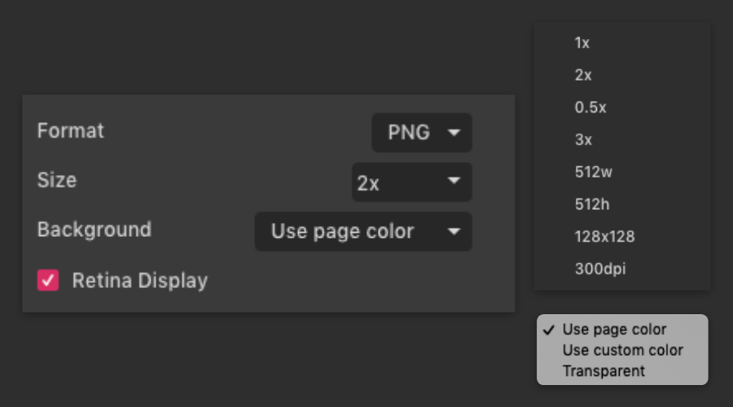
- Size – the following image size settings are available:
- Set a specific size (in pixels)
- 1920w will be 1920 pixels wide, height will be calculated automatically to preserve the design aspect ratio
- 1080h will be 1080 pixels high, the width will be calculated automatically to preserve the design aspect ratio
- 512×512 will be exactly 512×512 pixels – If the page does not fit exactly into that aspect ratio, symmetrical areas will be added to the output image.
- Set a proportionate size
- 3x will make your output image three times as large (3x) as the current design settings
- 0.5x will make your output image half as large (0.5x) as the current design settings
- Background:
- Use page color – use the color defined in the design
- Use custom color – set your own color rather than the color defined in the design.
- Transparent – use a transparent background
- Export all (only visible when there are multiple pages or objects to export) – checkbox for quickly selecting or deselecting all pages or objects. Individual pages or objects can still be selected or deselected after using this checkbox.
JPG
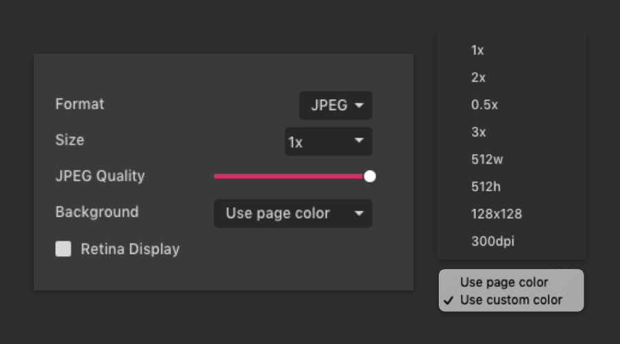
- Size: Same as PNG. See under PNG export options for details.
- Quality: Default is 100%. Lower quality will result in higher compression and smaller file sizes, achieved at the cost of data loss, lower quality output images, and possible compression artifacts. Note: even at 100% quality some data loss and compression artifacts can occur.
- Background:
- Use page color – use the color defined in the design
- Use custom color – set your own color rather than the color defined in the design.
SVG
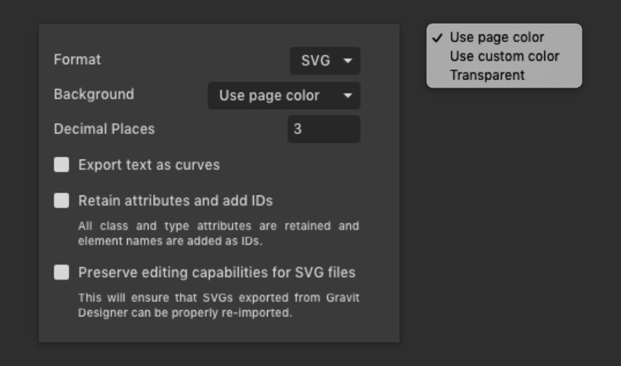
- Background
- Use page color – use the color defined in the design
- Use custom color – set your own color rather than the color defined in the design.
- Transparent – use a transparent background
- Decimal Places: the number of decimal places that will define the precision of the SVG attribute numbers.
- Export text as curves: All text contained in the SVG will be exported as a path and no longer like text.
- Retain attributes and add IDs: All class and type attributes are retained and element names are added as IDs.
- Preserve editing capabilities for SVG files: This will ensure that SVGs exported from Gravit Designer can be fully edited if imported back to Gravit Designer while retaining full fidelity. It is similar to saving as a .gvdesign file but embedded inside the SVG.
Notes:
- Gravit Designer preset shapes are currently exported as SVG paths (rather than shapes) to ensure all features are preserved (some features in the preset shapes are not supported in SVG).
- The SVG format does not support all of the features (particularly effects) available in Gravit Designer and might lose some editability.
- Some effects might be exported as an embedded image in an attempt to preserve the full appearance of your Gravit Designer project.
- Embedded images will not resize well and will increase the size of the output file.
Exporting the canvas
To export the whole canvas, go to the Export dialog (File> Export> Export, or the icon in the toolbar) and keep “Canvas” selected:
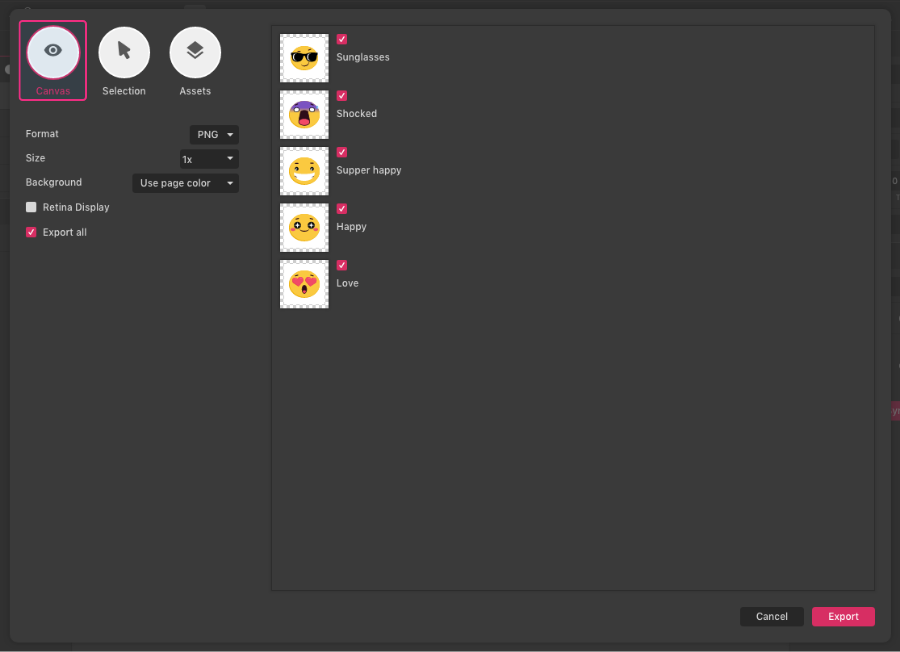
Exporting selected objects
Select the objects that you want to export, and on the Export dialog select “Selection”:
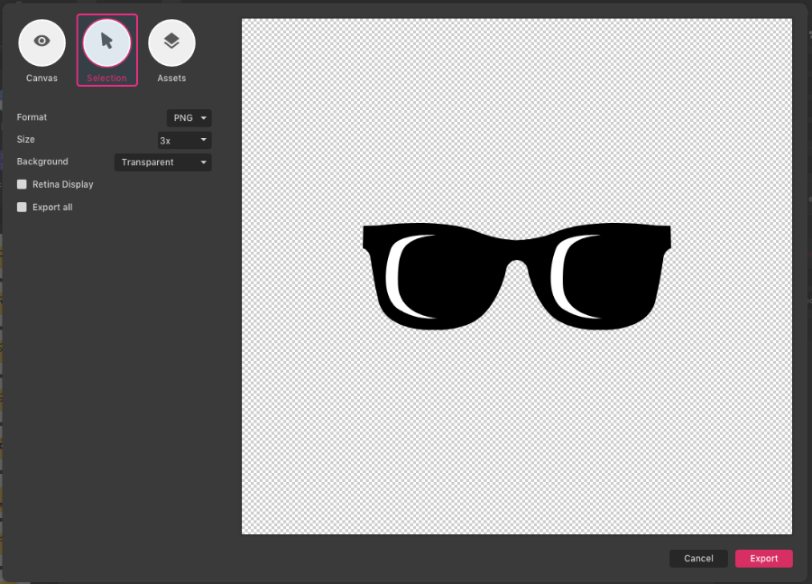
After clicking “Export”, if only a single object is selected, you will be asked for an image name.
If multiple objects are selected:
- PDF export: You will be asked for a file name. Each object will become a page in the output multi-page PDF
All other formats:
- You will be asked to pick a folder.
- Each object will export as a separate image in that folder.
- Object names (in the Layers panel) will be used for output file names, along with an incrementing number (for objects with the same name).
Mass exporting: assets and slices
Different objects and areas of your design can be set as “assets”. You can export many assets at once, meaning that with only one export you can create multiple output images from the same file.
To create an asset, you first need to make your objects exportable.
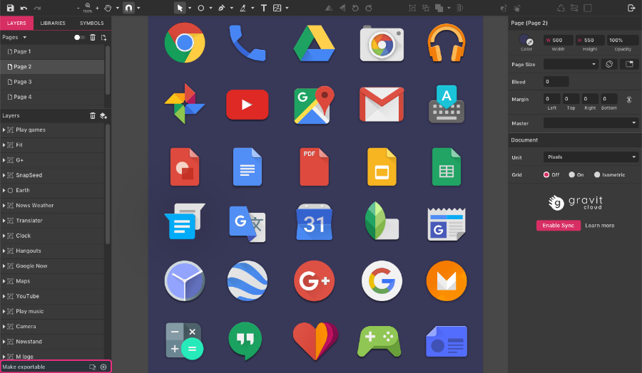
To set an object to exportable:
- Select the object
- Click the “+” icon on the Make Exportable section (left-bottom)
- Set the export options
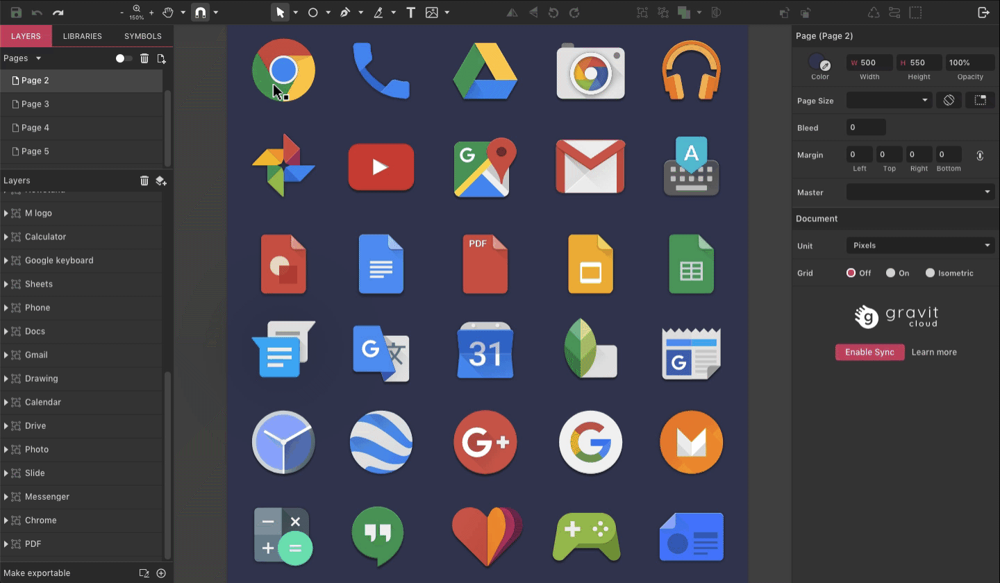
Your object is now an asset and ready to export.
Any object can be set to exportable – layer folder, slice, shape, path, compound shape, group. You can also repeat this on the same object to make it export at multiple sizes and/or multiple formats:
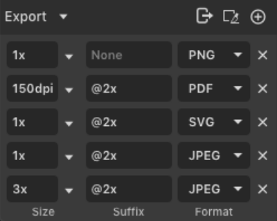
To export your assets, use either or the Export icon in the toolbar. Once you’re in the Export dialog, select “Asset”:
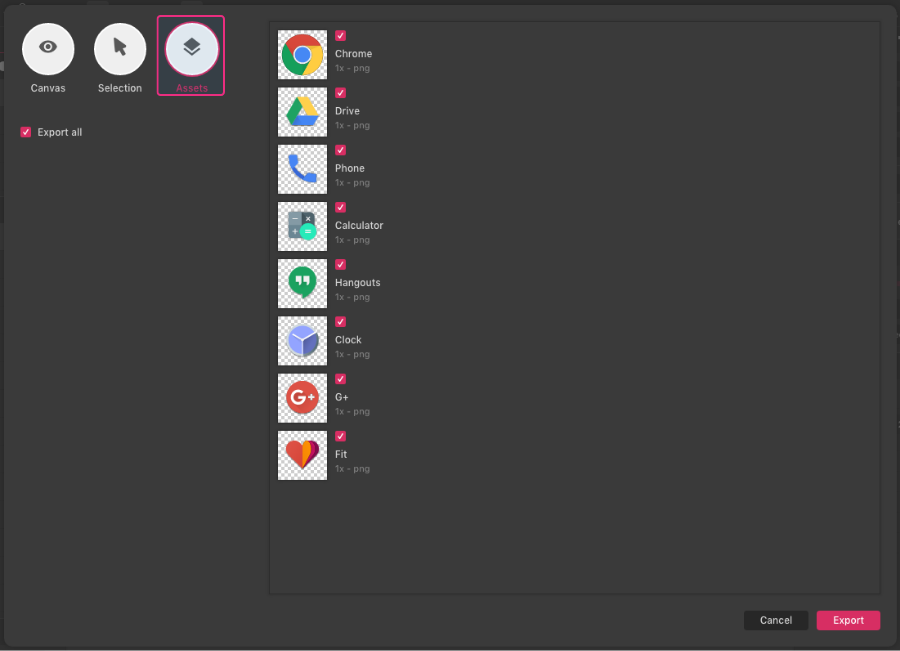
This is a powerful feature for many different purposes:
- You can simultaneously support a layer folder as a PNG file for an email signature and an SVG file for a web page logo.
- You can export a group to multiple PNG files at several different sizes to create a multi-resolution icon
- You could define limbs, torso, head, multiple hands, multiple mouths, and export them all as separate PNG images for cut-out animation.
- If you are designing a web page or mobile app, you could define all the interface elements on one page, set them each as an exportable asset, and export them all to separate images in one action.
Slices
A slice defines a rectangular area that can be used for exporting, something like a crop tool that is only used for defining export areas. You can have multiple slices in a document. Slices are treated as Assets during export.
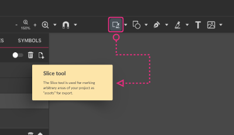
To create a Slice, select the Slice tool on the toolbar, click and drag:
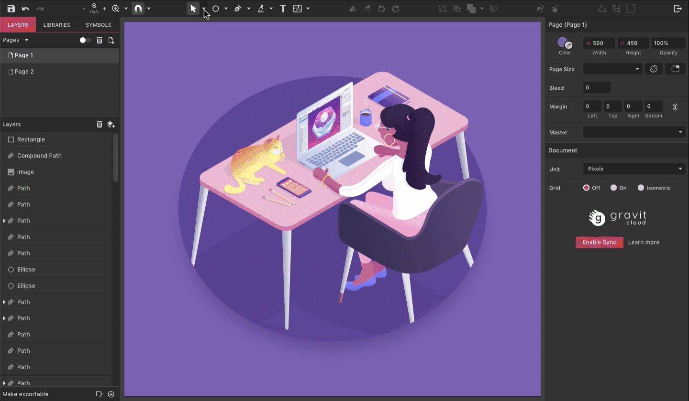
Alternatively, selected objects can be made into a slice using the slice icon at the bottom of the Layers panel:
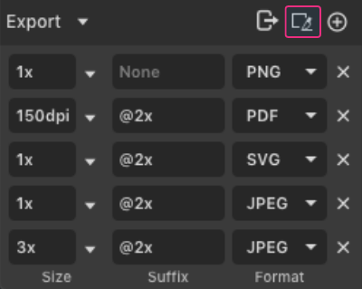
- Each page or canvas can have multiple slices.
- Each slice represents an output image.
- Slices can be hidden or revealed using the View menu > Hide Slices
- Corner anchor points will automatically scale the slice proportionally.
- Click and drag on a slice to move it around. The area that will be exported will change to whatever is currently under the slice.
- Like any other asset, slices can be set to export as raster (PNG or JPEG) or vector (SVG and PDF)
Exporting with transparency
The formats that support transparency are:
- SVG: vector shapes with transparency and transparent background
- PNG: raster image with transparency
- PDF: vector and raster transparency
To export with transparency:
- Set the opacity of your background to 0%
- Select the “transparent” option on the Export dialog